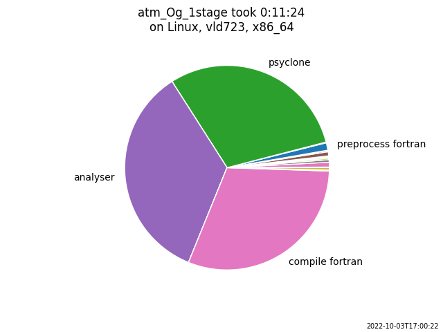

Features#
Fab is an open source Python project. Feel free to get involved.
Dependency Analysis#
Fab automatically discovers your C and Fortran source files. You don’t need to manually specify and maintain an ordered list of files, which can become problematic in a large project.
Fab determines the dependency hierarchy, including through C-Fortran interfacing, and thus determines the Fortran compile order. C is compiled in a single pass.
Incremental Build#
Fab “watermarks” each artefact with a checksum of its inputs. Subsequent builds avoid reprocessing by searching for watermarks in the prebuild folder.
Extensible#
It’s easy to add custom steps to your build script, e.g manipulating code, calling new tools, etc.
Zero Configuration#
It’s possible to run fab from the command line, in your source folder, for
a default build operation. For more complicated builds you may write a build
script.
Git, SVN and FCM#
Fab can fetch and merge source from remote repositories.
Metrics#
Fab will record the time taken by each step and plot them on a pie chart.
{kind=link}
Some steps also record metrics about their individual artefacts. For example below, the Fortran preprocessor created this histogram from the processing time of individual files,

and the Fortran compiler created this busby-style graph showing a compilation bottleneck.
{kind=link}
Limitations#
Known problems at the time of writing. For further issues see the issue tracker.
Fortran single-line IF calls#
Whilst fab can automatically determine Fortran dependencies from module use
statements, and from standalone call statements, it doesn’t currently detect a
dependency from a call statement on a single-line if statement:
IF (x .GT. 0) CALL foo(). Please see here for the workaround.
Name Clash#
Fab currently assumes there are no name clashes in your project by the time we reach certain build steps:
C and Fortran symbols go into one symbol table so there can be no duplicate symbol names by the time we reach the analysis stage.
Fortran mod files are created in a flat folder, so Fortran module names must be unique by the time we reach the compile stage.
C and Fortran object files are both compiled into .o files so there can be no duplicates, such as util.c and util.f90, by the time we reach the compile stage.
There may be duplicates earlier in the build process. For example, there may two versions of a module, each wrapped in a #ifdef so that one of them is empty after preprocessing (empty files are ignored during analysis).
Another approach is to use file filtering in the find_source_files step.
Fortran Include Folders and Incremental Build#
Fab generates a hash of Fortran *.mod file dependencies, and notices if a dependency changes, triggering a recompile. However, it can only currently do this for Fortran *.mod files inside the project workspace (or source_root override). It will not notice if a Fortran *.mod changes in an include folder elsewhere.
An example is the UM build which uses GCom’s mpl.mod. This issue is raised in #192.